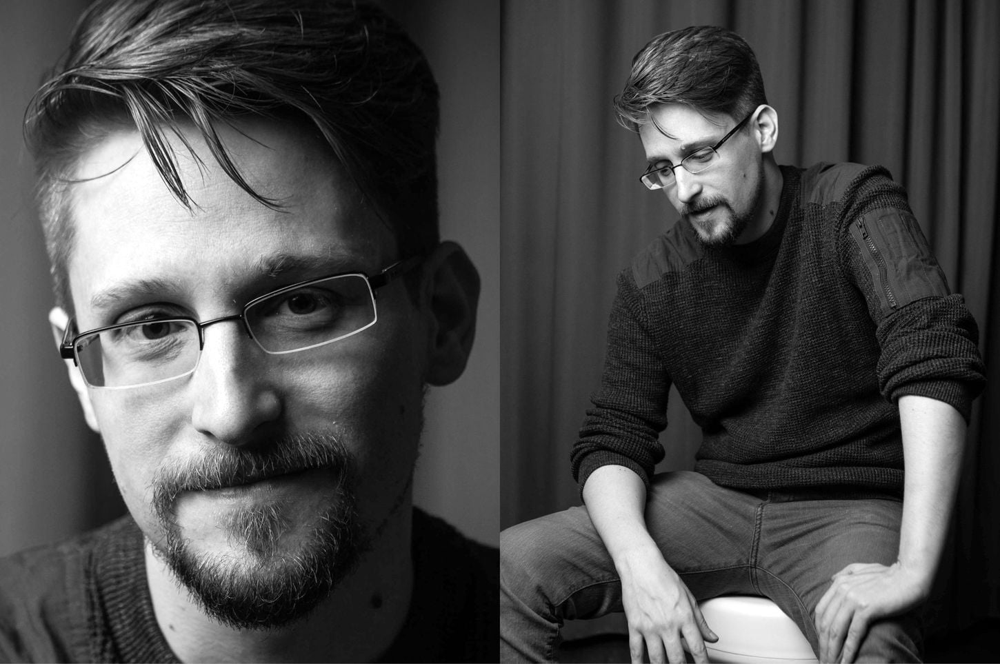

Edward Snowden
The man that exposed the details of classified United States government surveillance programs

"I don't want to live in a world where everything I say,
everything I do, everyone I talk to, every expression of
creativity and love or friendship is recorded.”
- Edward Joseph Snowden (born June 21, 1983) is an American whistleblower who copied and leaked highly classified information from the National Security Agency (NSA) in 2013 when he was a Central Intelligence Agency (CIA) employee and subcontractor. His disclosures revealed numerous global surveillance programs, many run by the NSA and the Five Eyes Intelligence Alliance with the cooperation of telecommunication companies and European governments, and prompted a cultural discussion about national security and individual privacy.
- In 2013, Snowden was hired by an NSA contractor, Booz Allen Hamilton, after previous employment with Dell and the CIA. Snowden says he gradually became disillusioned with the programs with which he was involved and that he tried to raise his ethical concerns through internal channels but was ignored. On May 20, 2013, Snowden flew to Hong Kong after leaving his job at an NSA facility in Hawaii, and in early June he revealed thousands of classified NSA documents to journalists Glenn Greenwald, Laura Poitras, Barton Gellman, and Ewen MacAskill. Snowden came to international attention after stories based on the material appeared in The Guardian, The Washington Post, and other publications.
- On June 21, 2013, the United States Department of Justice unsealed charges against Snowden of two counts of violating the Espionage Act of 1917 and theft of government property, following which the Department of State revoked his passport. Two days later, he flew into Moscow's Sheremetyevo International Airport, where Russian authorities observed the cancelled passport, and he was restricted to the airport terminal for over one month. Russia later granted Snowden the right of asylum with an initial visa for residence for one year, which was subsequently repeatedly extended. In October 2020, he was granted permanent residency in Russia.
- A subject of controversy, Snowden has been variously called a traitor, a hero, a whistleblower, a dissident, and a patriot. U.S. officials condemned his actions as having done "grave damage" to the U.S. intelligence capabilities. Snowden has defended his leaks as an effort "to inform the public as to that which is done in their name and that which is done against them." His disclosures have fueled debates over mass surveillance, government secrecy, and the balance between national security and information privacy.
- In early 2016, Snowden became the president of the Freedom of the Press Foundation, a San Francisco-based nonprofit organization that aims to protect journalists from hacking and government surveillance. In 2017, he married Lindsay Mills. On September 17, 2019, his memoir Permanent Record was published. On September 2, 2020, a U.S. federal court ruled that the U.S. intelligence’s mass surveillance program, exposed by Edward Snowden, was illegal and possibly unconstitutional.